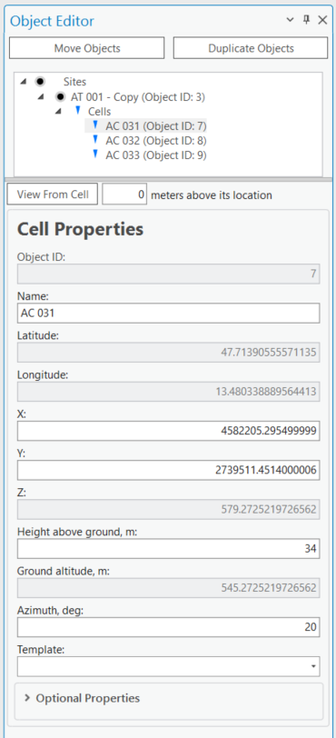
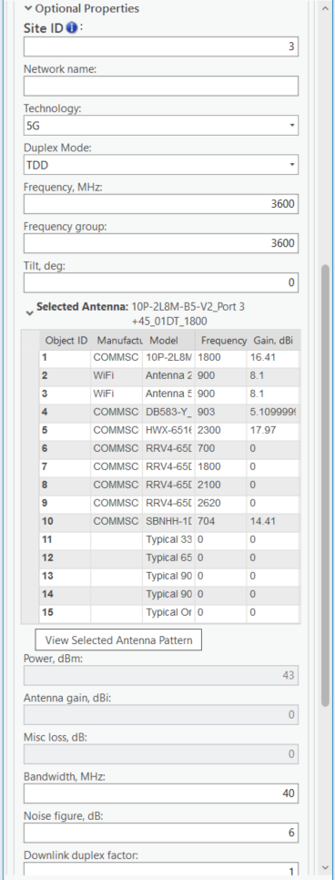
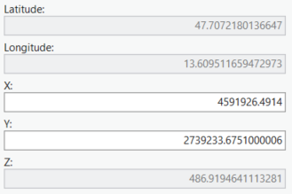
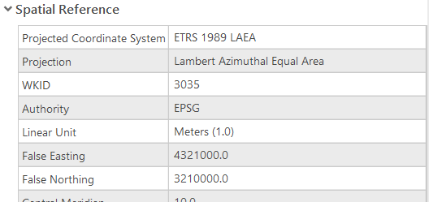
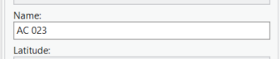
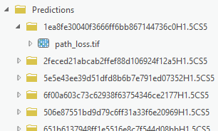
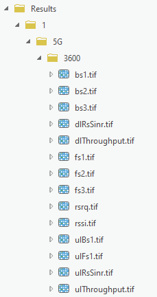
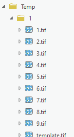

07. Cell Prediction
Version: CE Pro v4.9
Cell prediction results are displayed as coverage rasters in the ArcGIS Pro map view:
Configure prediction parameters in the CE Pro pane before running:
Cell Structure




Each cell in CE Pro has two categories of parameters:



Physical parameters: - Coordinates (X/Y or Latitude/Longitude) - Height (above ground) - Azimuth (direction)Logical parameters: - Power (dBm or EIRP) - Bandwidth (MHz) - Frequency (MHz) - Technology (2G/3G/4G/5G)
Cell Coordinates
CE Pro supports two coordinate systems:
| System | Fields | Notes |
|---|---|---|
| Projected (CRS) | X, Y | Meters in project CRS |
| Geographic (WGS 1984) | Longitude, Latitude | Decimal degrees |
| Z — total height above sea level | Calculated from site height + cell height |
Note: Cell name is a unique parameter per project. Best Server prediction also uses the cell name as identifier.
Cell Parameters Reference
| CE Field | Units | Example | Description |
|---|---|---|---|
cell_name |
text | 5G cell XXYY |
Unique cell identifier |
site_name |
text | Site 55 ID |
Parent site identifier |
latitude |
decimal degrees | 49.9993 |
Y coordinate in WGS 1984 |
longitude |
decimal degrees | 33.6573 |
X coordinate in WGS 1984 |
height |
meters | 40 |
Cell height above ground |
azimuth |
degrees (0–360) | 50 |
Cell direction from north |
tilt |
degrees | 1 |
Mechanical tilt angle |
frequency |
MHz | 3500 |
Carrier frequency |
power |
dBm | 40 |
Cell transmit power (or EIRP) |
antenna_gain |
dBi | 18.2 |
Gain of assigned antenna |
misc_loss |
dB | 1 |
Total cell miscellaneous loss |
bandwidth |
MHz | 0.015 |
Cell bandwidth (required for 3G/4G/5G) |
subcarrier_spacing |
kHz | 15 |
Subcarrier spacing (required for 5G) |
tx_mimo |
number | 4 |
Transmitter MIMO config (1/2/4/8/16/32/64) |
rx_mimo |
number | 4 |
Receiver MIMO config (1/2/4/8/16/32/64) |
cell_load |
% (0–100) | 30 |
Real-time cell load for broadband calculations |
technology |
text | 2G |
Cell technology: 2G, 3G, 4G, or 5G |
antenna_id |
number | 1 |
ID of assigned antenna pattern |
Power vs EIRP
- If workspace parameter Calculate EIRP = Yes: enter cell transmit power — EIRP is calculated from power + antenna gain − misc loss
- If workspace parameter Calculate EIRP = No:
powerfield represents EIRP directly
RF Prediction Output Structure
CE Pro stores prediction results in a defined folder structure within the project:
Project/
├── Predictions/ — prediction configuration files
├── Results/ — output raster layers (coverage maps)
├── Temp/ — temporary calculation files
Running a Cell Prediction
- Open the CE Desktop tab in the ArcGIS Pro ribbon
- Select one or more cells on the map
- Click RF Prediction and choose prediction type:
- Signal Level (dBm) — received signal power at UE
- Best Server — which cell provides strongest signal per pixel
- SINR — Signal to Interference + Noise Ratio
- Throughput (Mbps) — estimated data rate
- Set radius (km), resolution (m), and prediction model
- Click Run — results appear as raster layers in the Contents pane
Prediction Types Explained
| Type | Unit | Use Case |
|---|---|---|
| Signal Level | dBm | Coverage threshold mapping |
| Best Server | cell name | Frequency planning, handover zones |
| SINR | dB | Interference analysis |
| Throughput | Mbps | Capacity and QoS planning |
Reference: CE Desktop Training — 4. Cell Prediction Contact: info@cellular-expert.com | +370 5 2150575